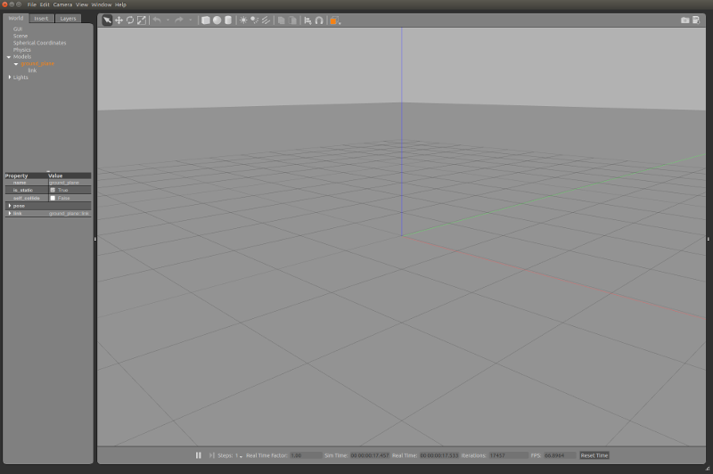
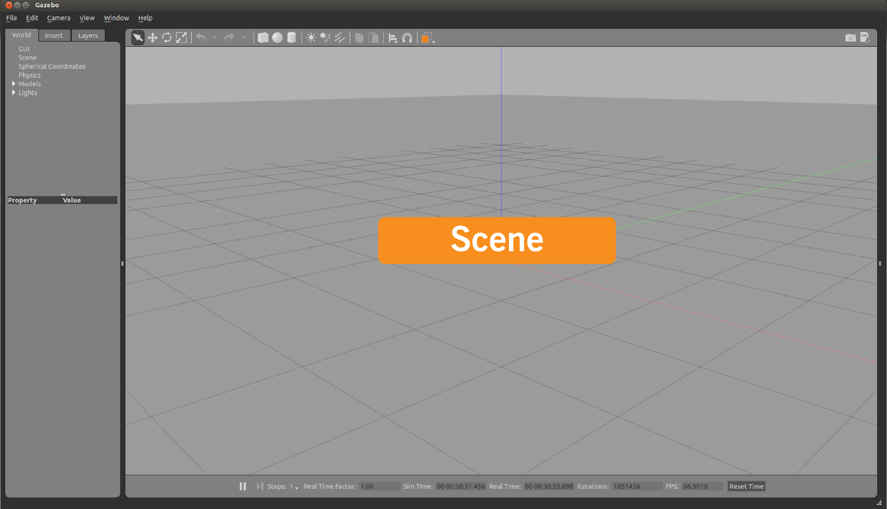
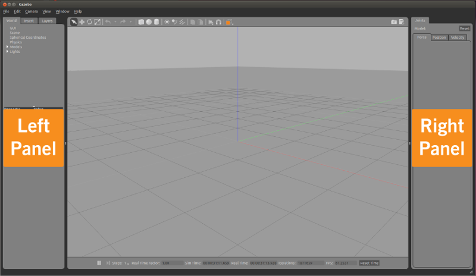

gazebo的使用（一）
系统：Ubuntu 20.04
Gazebo是一款动态的3D仿真软件，它可以快速测试算法，设计机器人，执行回归测试，使用现实场景训练人工智能系统，并且可以在复杂的室内和室外环境中，精确和有效地模拟大量的机器人。Gazebo有一个强大的物理引擎，高质量的图形界面，有着高保真度的视觉模拟，免费使用！
系统的要求
Gazebo目前在Ubuntu上使用得最好，Ubuntu是Linux的一个版本。电脑最好需要有如下配置
一个可以工作的GPU
等价于i5及以上的CPU
至少500MB的磁盘存储
安装
安装Gazebo可以通过源码的方式进行安装也可以通过命令行的方式进行安装，若是需要对Gazebo展开开发的工作，建议源码安装Gazebo，下面我们简单介绍以命令行的形式安装Gazebo
设置计算机以接受来自
packes.osrfoundation.org的软件。1
sudo sh -c 'echo "deb http://packages.osrfoundation.org/gazebo/ubuntu-stable `lsb_release -cs` main" > /etc/apt/sources.list.d/gazebo-stable.list'
查看上述命令是否执行成功，可以通过如下方式
1
cat /etc/apt/sources.list.d/gazebo-stable.list
终端应该会返回
1
deb http://packages.osrfoundation.org/gazebo/ubuntu-stable focal main
设置key
1
wget https://packages.osrfoundation.org/gazebo.key -O - | sudo apt-key add -
安装Gazebo
首先更新debian数据库:
1
sudo apt-get update
提示: 确保apt-get更新过程在没有任何错误的情况下结束，控制台输出以Done结束，如下所示:
接下来安装Gazebo-11：
1
sudo apt-get install libgazebo11-dev
如果发生报错
1
E: Unable to locate package gazebo11
可能是由于系统不支持
Gazebo，在Ubuntu 16.04上就会报上述错误检查是否安装成功
1
gazebo
用户界面
通过点击Gazebo图标或者在终端输入
1 | gazebo |
将会看到如下界面

接下来介绍Gazebo的界面
The Scene
场景(Scene)是模拟器的主要部分。这是模拟对象动画和你与环境交互的地方。

The Panels
左右两边的面板都可以通过拖动分隔条（五个点）来显示、隐藏或调整他们的大小。

左侧面板
左侧的面板默认是打开的，这里有三个选项卡
- WORLD：world选项卡会显示出当前场景中的模型，并允许您查看和修改模型参数，比如它们的位姿。你也可以通过扩展“GUI”选项和调整相机姿势来改变相机视角。
- INSERT：INSERT选项卡是您向模拟器添加新模型的地方。要查看模型列表，您可能需要单击箭头来展开文件夹。点击(并释放)你想要插入的模型，然后在场景中再次点击添加它
- Layer: Layers选项卡组织并显示模拟过程中可用的不同可视化组(如果有的话)。一个层可以包含一个或多个模型。打开或关闭一个层将显示或隐藏该层中的模型。
右侧面板（默认隐藏）
默认情况下，右面板是隐藏的。单击并拖动分隔条以打开它。右边的面板可以用来与选定模型的可移动部件(关节)进行交互。如果场景中没有选择模型，面板不会显示任何信息。
工具栏
主工具栏包括一些最常用的与模拟器交互的选项，例如:选择、移动、旋转和缩放对象的按钮; 创建简单的形状(如立方体，球体，圆柱体)和复制/粘贴。接下来点击每一个按钮可以查看他们是如何工作的

选择模式：在场景中导航
平移模式：选择模型，可以进行移动
旋转模式：选择模型，可以进行旋转
缩放模式：选择模型，可以进行缩放
Undo/Redo: Undo/Redo在场景中的动作
简单模型：插入一些简单的模型到场景中
灯光：可以向场景中添加灯光
Copy/Paste: 复制/粘贴场景中的模型
对齐：把一个模型对齐到另外一个模型
snap: snap one model to another
视角转变：可以选择各个角度观察场景
底部工具栏
底部的工具栏显示模拟的数据，如模拟时间及其与现实时间的关系。“模拟时间”指的是模拟使用的时间，他可能比真实世界的时间（现实时间）慢或快，这取决于运行模拟所需的计算量。
Gazebo中的世界状态在每次迭代中都会计算一次。您可以在底部工具栏的右侧看到迭代次数。每次迭代都将模拟推进固定的秒数，称为步长。默认步长为1毫秒。您可以按下pause按钮暂停模拟，并使用step按钮一次执行几个步骤。

菜单
和大多数应用程序一样，Gazebo的顶部也有一个应用程序菜单。有些菜单选项重复出现在工具栏或场景中的右键菜单选项中。

鼠标控制
在场景中导航时，鼠标非常有用。我们强烈建议使用鼠标与滚轮，右键单击模型也打开一个带有各种选项的上下文菜单。以下是用于在场景中导航并更改视角的基本鼠标操作。